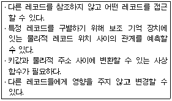
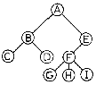
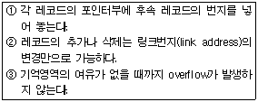
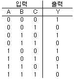
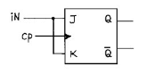
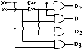
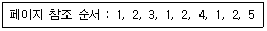
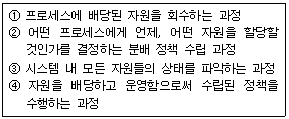
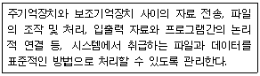

전자계산기조직응용기사 (2006-03-05 기출문제)
1과목: 전자계산기 프로그래밍
1. PC Assembly 명령 중 xchg 명령은 두 피연산자를 교환하는 경우 임시값을 보관하기 위해 다른 레지스터를 필요로 하지 않아 고속 데이터 교환이 가능한 명령이다. 이 xchg 명령어의 사용 형태로 옳지 않은 것은?
- xchg register, register
- xchg memory, register
- xchg register, memory
- xchg memory, memory
(정답률: 73%)

2. 어셈블리 명령문의 구성 요소 중, 생략되어도 실행에 전혀 지장을 주지 않는 것은?
- 레이블
- 동작코드
- 오퍼랜드
- 주해(주석)
(정답률: 95%)
3. 원도우 프로그래밍에 관한 설명으로 옳지 않은 것은?
- 윈도우를 만들고 그 위에 각종 컨트롤들을 배치하는 것으로 사용자 인터페이스가 만들어 진다.
- 특정 사건이 발생했을 때 이를 처리하는 프로그램을 작성하는 형태로 프로그램이 형성된다.
- 사용자 인터페이스의 작성이 용이하다
- 윈도우 프로그램으로 작성한 응용 프로그램은 컴파일하지 않아도 실행 가능하다.
(정답률: 92%)
4. C 언어에서 포인터에 대한 설명으로 옳지 않은 것은?
- 포인터는 메모리 주소를 가질 수 있는 형이다.
- 포인터는 메모리 주소값과 메모리 주소가 가리키는 위치에 있는 값을 다룰 수 있다.
- 포인터의 주소 연산자는 “%”를 이용하여 사용자 임의로 만들 수 있다.
- 배열과 같은 연속된 데이터 집합을 다룰 때 포인터 연산을 이용하면 유용하다.
(정답률: 90%)
5. PLC에서 CPU의 구성을 가장 적절하게 구분한 것은?
- 연산제어부와 메모리부
- 전원부와 메모리부
- 입출력제어부와 제어부
- 연산제어부와 입출력부
(정답률: 47%)
6. 어셈블리에서 수행된 명령어의 결과와 CPU 상태에 대한 결과를 저장하고 있는 레지스터는 무엇인가?
- 세그먼트 레지스터
- 베이스 레지스터
- 플래그 레지스터
- 인덱스 레지스터
(정답률: 54%)
7. 프로그래밍 언어에서 유해한 특징이 아닌 것은?
- goto
- Binding
- Aliasing
- Side Effects
(정답률: 83%)
8. 어셈블리 명령의 사용이 잘못된 것은?
- MOV DX, 100
- ADD X, Y
- SUB AX, BL
- MUL CL
(정답률: 39%)
9. 변수(Variable)에 대한 설명으로 옳지 않은 것은?
- 변수는 프로그램 실행과정에서 하나의 기억장소를 차지하며 상수와는 달리 값이 변할 수 있다.
- 변수는 이름(name), 값(value), 속성(attribute), 참조(reference)는 자료 값에 따라 필요로 하는 기억장소를 확인할 수 있도록 하는 요소이다.
- 참조(reference)는 자료 값에 따라 필요로 하는 기억장소를 확인할 수 있도록 하는 요소이다.
- 자료의 속성은 고정되어 있지만 변수명과 참조는 변할 수 있다.
(정답률: 65%)
10. PLC(Programmable Logic Controller)에 대한 설명으로 틀린 것은?
- 종래에 사용하던 제어반 내의 릴레이, 타이머, 카운터 등의 기능을 LSI, 트랜지스터 등의 반도체 소자로 대체시킨 것이다.
- 기본적인 시퀀스 제어 가능에 수치 연산 기능을 추가하여 프로그램 제어가 가능하도록 한 자율성이 높은 제어장치이다.
- 프로그램 가능한 메모리를 사용하고 여러 종류의 기계나 프로세스를 제어하는 디지털 동작의 전자 장치이다.
- 웹 프로그램의 발달에 따라 웹 서버에서 전체 프로그램을 관리하기 위해 만들어진 제어장치이다.
(정답률: 89%)
11. 객체의 전용자료와 메소드를 다른 객체가 접근할 수 없다는 의미로서 소프트웨어 공학의 정보은닉에 해당하는 것은?
- 캡슐화(encapsulation)
- 추상화(abstraction)
- 상속성(inheritance)
- 다형성(polymorphism)
(정답률: 87%)
12. PLC의 공정진행형 방식이 아닌 것은?
- 플로우차트방식
- 논리기호방식
- 타임차트방식
- 스텝래더방식
(정답률: 31%)
13. C 언어의 기억 클래스에 해당하지 않는 것은?
- static
- register
- extern
- local
(정답률: 85%)
14. C 언어의 비트 연산자가 아닌 것은?
- ^
- <<
- ~
- &&
(정답률: 80%)
15. C 언어에서 부호 없는 10진 정수를 출력하고자 할 때 printf 문의 변환 문자는?
- %u
- %x
- %c
- %f
(정답률: 95%)
16. 다음 어셈블리 명령에서 처리 성격이 다른 것은?
- LOOP
- JMP
- CVD
- CALL
(정답률: 69%)
17. C 언어에서 일정한 부분에 대하여 조건이 만족할 때 까지 반복 실행하는 제어문이 아닌 것은?
- for 문
- while 문
- switch 문
- do-while 문
(정답률: 89%)
18. 객체 지향 프로그래밍의 특징으로 거리가 먼 것은?
- 객체 중심의 프로그래밍 기법으로 클래스의 재사용성(reusability)이 높다.
- 클래스에는 함수와 객체의 속성이 정의되며, 객체는 클래스 내에 정의된 멤버 함수를 통해서 접근이 가능하다.
- 객체 중심은 구조적 코딩 기능을 극대화할 수 있다.
- C++, Smalltalk 등의 언어가 이에 속한다.
(정답률: 85%)
19. 어셈블리 언어에서 프로세서 제어용(processor control) 명령어가 아닌 것은?
- HLT
- LOCK
- WAIT
- POP
(정답률: 75%)
20. 어떤 문제를 해결하거나 자료 처리를 위해서 고급 언어 등을 이용하여 사용자가 직접 작성한 프로그램을 의미하는 것은?
- 시스템 프로그램(system program)
- 응용 프로그램(application program)
- 번역 프로그램(translator program)
- 제너럴 프로그램(general program)
(정답률: 79%)
2과목: 자료구조 및 데이터통신
21. 통신 양단간(end-to-end)의 에러제어와 흐름제어를 하는 계층은?
- 응용 계층
- 네트워크 계층
- 물리 계층
- 트랜스포트 계층
(정답률: 89%)
22. 송ㆍ수신간의 처리 속도 차이나 수신측 버퍼 크기의 제한에 의해 발생 가능한 정보의 손실을 방지하기 위해서 수신측이 송신측을 제어하는 기술은?
- 에러 제어
- 흐름 제어
- 동기 제어
- 비동기 제어
(정답률: 89%)
23. 현재 많이 사용되고 있는 LAN 방식 중 “10Base-T"의 10이 의미하는 것은?
- 케이블의 굵기가 10mm이다.
- 데이터 전송 속도가 10Mbps이다.
- 접속할 수 있는 단말이 수가 10대이다.
- 배선할 수 있는 케이블의 길이가 10m이다.
(정답률: 100%)
24. 쿼드 비트를 사용하여 1,600 [baud]의 변조 속도를 지니는 데이터 신호가 있다. 이 때 데이터 신호속도[bps]는?
- 2,400
- 3,200
- 4,800
- 6,400
(정답률: 100%)
25. 다음 중 TCP/IP의 계층 구조가 아닌 것은?
- 트랜스포트 계층
- 네트워크 계층
- 세션계층
- 응용계층
(정답률: 63%)
26. 실제로 데이터를 보낼 터미널에만 요구가 있을 때 부채널에 시간폭을 할당하는 다중화 방식은?
- 주파수 분할 다중화
- 역 다중화
- 예약 시분할 다중화
- 통계적 시분할 다중화
(정답률: 93%)
27. 다음 다중화 기법 중 TV 공중파와 관련이 있는 것은?
- CDM
- FDM
- TDM
- PDM
(정답률: 79%)
28. 중앙 제어기 또는 허브를 요구하는 토폴로지(topology)는?
- 그물망
- 버스형
- 성형
- 링형
(정답률: 70%)
29. 다음 중 데이터 전송제어 절차의 순서가 옳은 것은?
- 회선연결→데이터 전송→링크설정→회선해제→링크해제
- 회선연결→링크설정→데이터 전송→링크해제→회선해제
- 링크설정→회선연결→데이터 전송→회선해제→링크해제
- 링크설정→데이터 전송→회선연결→회선해제→링크해제
(정답률: 90%)
30. IP(인터넷 프로토콜)의 주요 임무가 아닌 것은?
- 패킷 절단
- 호스트의 주소 지정
- 전송 경로의 논리적 관리
- 전송 패킷의 안정성 관여
(정답률: 34%)
31. 수식 “A*B/C+D**E-F"을 postfix로 표시한 것은?
- -+/*ABC**DEF
- */ABC+**-DEF
- ABC*/+DE**F-
- AB*C/DE**+F-
(정답률: 75%)
32. 킷값을 여러 부분으로 분류하여 각 부분을 더하거나 XOR 하여 주소를 얻는 해싱 함수의 종류는?
- mid-square
- folding
- division
- radix conversion
(정답률: 47%)
33. 십진수 “+17”과 “-17”을 2의 보수(2‘S Complement) 형태로 옳게 표현한 것은?
- +17 : 00010001, -17 : 10010001
- +17 : 10010000, -17 : 11110010
- +17 : 00010001, -17 : 11101111
- +17 : 00010001, -17 : 11101110
(정답률: 90%)
34. R = [26,5,37,1,61,11,59,15,48,19]의 데이터를 Quick sort하려고 한다. 2회 정렬 수행 후의 결과는?
- 26,5,37,1,61,11,59,15,48,19
- 11,5,19,1,15,26,59,61,48,37
- 1,5,11,19,15,26,59,61,48,37
- 1,5,11,15,19,26,59,61,48,37
(정답률: 89%)
35. 해싱에서 동일한 버켓 주소를 갖는 레코드들의 집합을 의미하는 것은?
- synonym
- collision
- slot
- bucket
(정답률: 95%)
36. 관계형 데이터 모델에서 속성(attribute)간의 관계를 표현하는 것은?
- relation
- tuple
- domain
- entity
(정답률: 89%)
37. 다음 설명에 해당하는 파일 구조는?

- 순차파일(sequential file)
- 랜덤파일(random file)
- 직접파일(direct file)
- 인덱스된 순차 파일(indexed sequential file)
(정답률: 83%)
38. 다음 Tree의 디그리(Degree)는?

- 1
- 2
- 3
- 4
(정답률: 84%)
39. 3단계 데이터베이스 구조의 스키마 종류에 해당하지 않는 것은?
- 외부 스키마
- 개념 스키마
- 내부 스키마
- 관계 스키마
(정답률: 87%)
40. 다음 설명에 해당되는 자료구조는 무엇인가?

- 큐(Queue)구조
- 리스트(List)구조
- 스택(Stack)구조
- 목(Tree)구조
(정답률: 76%)
3과목: 전자계산기구조
41. 컴퓨터시스템이 작동되면 먼저 프로그램카운터의 초기 주소값이 결정되고 주소에 의하여 명령어가 기억장치로부터 읽혀지는 것을 무엇이라 하는가?
- 인출(fetch)
- 실행(execute)
- 간접(indirect)
- 인터럽트(interrupt)
(정답률: 81%)
42. 그림의 진리표에서 출력 Y를 최소화 하면?

- Y=A'B
- Y=AB
- Y=A+B'
- Y=C'
(정답률: 89%)
43. 컴퓨터 내부에서 시스템 순간순간의 상태를 나타내는 것은?
- SP
- PSW
- Interrupt
- MAR
(정답률: 77%)
44. 주소 지정 방식(Addressing Mode)중에서 프로그램 카운터 값에 명령어의 주소 부분을 더해서 실제 주소를 구하는 방식은?
- 직접 번지 방식
- 즉시 번지 방식
- 상대 번지 방식
- 레지스터 번지 방식
(정답률: 40%)
45. 등각속도(CAV) 방식의 특징이 아닌 것은?
- 모든 트랙의 저장 밀도가 같다.
- 디스크 저장 공간이 비효율적으로 사용된다.
- 회전 구동장치가 간단하다.
- 디스크 평판이 일정한 속도로 회전한다.
(정답률: 72%)
46. 로더(Loader)의 기능 중 옳지 않은 것은?
- 할당(Allocation)
- 재배치(Relocation)
- 링킹(Linking)
- 실행(Execution)
(정답률: 80%)
47. 직접 메모리 액세스(DMA)의 특징이 아닌 것은?
- CPU의 도움 없이 메모리와 I/O 장치 사이에서 전송을 시행한다.
- CPU와 DMA 제어기는 메모리와 버스를 공유한다.
- CPU의 상태 보존은 반드시 필요하다
- 사이클 스틸을 발생하여 메모리 장치와 I/O 장치사이의 자료 전송을 수행한다.
(정답률: 65%)
48. 하드웨어 신호에 의하여 특정 번지의 서브루틴을 수행하는 것은?
- handshaking mode
- vectored interrupt
- DMA
- subroutine call
(정답률: 80%)
49. JK 플립플롭을 그림과 같이 연결하면 어떤 플립플롭과 같은 동작을 하는가?

- D
- RS
- T
- Master-slave
(정답률: 83%)
50. 다음 중 단항(unary) 연산이 아닌 것은?
- complement
- rotate
- AND
- shift
(정답률: 89%)
51. op-code가 4비트면 연산자의 종류는 몇 개가 생성될 수 있는가?
- 24-1
- 24
- 23
- 23-1
(정답률: 50%)
52. 인터럽트 체제의 기본 요소에 속하지 않는 것은?
- 인터럽트 처리 기능
- 인터럽트 요청 신호
- 인터럽트 스테이트
- 인터럽트 취급 루틴
(정답률: 50%)
53. 컴퓨터의 주기억장치 용량이 8192비트이고, 워드 길이가 16비트 일 때 PC(Program Counter), AR&Address Register)와 DR(Data Register)의 크기는?
- PC=8, AR=9, DR=16
- PC=9, AR=9, DR=16
- PC=16, AR=16, DR=16
- PC=8, AR=16, DR=16
(정답률: 67%)
54. 명령어의 operand 부분에 실제 데이터를 갖고 있는 방식은?
- 즉시(immediate) 주소지정 방식
- 베이스(bast) 주소지정 방식
- 상대(relative) 주소지정 방식
- 직접(direct) 주소지정 방식
(정답률: 42%)
55. 캐시(cache) 메모리에서 특정 내용을 찾는 방식 중 매핑 방식에 주로 사용되는 메모리는?
- Nano memory
- Associative memory
- Virtual memory
- Stack memory
(정답률: 62%)
56. 0-주소 인스트럭션과 관계있는 것은?
- Scratch-pad register
- Accumulator
- Stack
- Instruction buffer
(정답률: 75%)
57. 중앙처리장치가 주기억장치보다 더 빠르기 때문에 프로그램 실행 속도를 중앙처리장치의 속도에 근접하도록 하기 위해서 사용되는 기억장치는?
- 가상 기억 장치
- 모듈 기억 장치
- 보조 기억 장치
- 캐시 기억 장치
(정답률: 88%)
58. 다음 회로는 무엇인가?

- decoder
- multiplexer
- encoder
- shifter
(정답률: 53%)
59. ROM 칩에 필요하지 않은 신호는?
- 쓰기 신호
- 주소
- 읽기 신호
- 칩 선택 신호
(정답률: 65%)
60. Exclusive - OR gate의 출력은?
- (AB)' + AB
- A'B' + AB
- A'B + AB'
- AB' + AB'
(정답률: 89%)
4과목: 운영체제
61. 직접파일(direct file)에 대한 설명으로 거리가 먼 것은?
- 직접접근기억장치의 물리적 주소를 통해 직접 레코드에 접근한다.
- 키에 일정한 함수를 적용하여 상대 레코드 주소를 얻고, 그 주소를 레코드에 저장하는 파일 구조이다
- 직접 접근 기억장치의 물리적 구조에 대한 지식이 필요하다.
- 직접 파일에 적합한 장치로는 자기테이프를 주로 사용한다.
(정답률: 48%)
62. UNIX 운영체제의 특징으로 볼 수 없는 것은?
- 대화식 운영체제이다.
- 다중 사용자 시스템(Multi-user system)이다.
- 대부분의 코드가 어셈블리 언어로 기술되어 있다.
- 높은 이식성과 확장성이 있다.
(정답률: 79%)
63. 분산시스템을 설계하는 주된 이유가 아닌 것은?
- 신뢰도 향상
- 자원 공유
- 보안의 향상
- 연산 속도 향상
(정답률: 71%)
64. 기억장치의 관리 전략 중 반입(fetch)전략의 설명으로 옳은 것은?
- 프로그램/데이터를 주기억장치로 가져오는 시기를 결정하는 전략
- 프로그램/데이터에 대한 주기억장치 내의 위치를 결장하는 전략
- 주기억장치 내의 빈공간 확보를 위해 제가할 프로그램/데이터를 선택하는 전략
- 프로그램/데이터의 위치를 이동시키는 전략
(정답률: 67%)
65. UNIX에서 프로세스를 복제하는 기능과 관계되는 것은?
- getppid
- getpid
- fork
- exec
(정답률: 54%)
66. 하나의 프로세스가 작업 수행 과정에서 수행하는 기억장치접근에서 지나치게 페이지 폴트가 발생하여 프로세스 수행에 소요되는 시간보다 페이지 이동에 소요되는 시간이 더 커지는 현상은?
- 스레싱(thrashing)
- 워킹세트(working set)
- 세마포어(semaphore)
- 교환(swapping)
(정답률: 86%)
67. 4개의 페이지를 수용할 수 있는 주기억장치가 있으며, 초기에는 모두 비어 있다고 가정한다. 다음의 순서로 페이지 참조가 발생할 때, LRU 페이지 교체 알고리즘을 사용할 경우 몇 번의 페이지 결함이 발생하는가?

- 4회
- 5회
- 6회
- 7회
(정답률: 58%)
68. 데커(Dekker) 알고리즘에 대한 설명 중 옳지 않은 것은?
- 교착상태가 발생하지 않음을 보장한다.
- 프로세스가 임계영역에 들어가는 것이 무한정 지연될 수 있다.
- 공유 데이터에 대한 처리에 있어서 상호배제를 보장한다.
- 별도의 특수 명령어 없이 순수하게 소프트웨어로 해결된다.
(정답률: 30%)
69. 운영체제를 자원 관리자(resource manager)라는 관점으로 보았을 때, 자원들을 관리하는 과정을 순서대로 옳게 나열 한 것은?

- ①-②-③-④
- ③-②-④-①
- ①-③-②-④
- ③-④-②-①
(정답률: 89%)
70. 파일 손상을 막기 위한 파일 보호 기법이 아닌 것은?
- 파일 명명(File Naming)
- 접근 제어(Access control)
- 암호화(Password/Cryptography)
- 복구(Recovery)
(정답률: 93%)
71. 운영체제를 기능상으로 분류했을 때, 제어 프로그램 중 보기의 설명에 해당하는 것은?

- 문제 프로그램(problem program)
- 감시 프로그램(supervisor program)
- 작업 제어 프로그램(job control program)
- 데이터 관리 프로그램(data management program)
(정답률: 69%)
72. SCAN의 무한 대기 발생 가능성을 제거한 것으로 SCAN 보다 응답시간의 편차가 적고, SCAN과 같이 진행 방향상의 요청을 서비스하지만, 진행 중에 새로이 추가된 요청은 서비스하지 않고 다음 진행시에 서비스하는 디스크 스케줄링 기법은?
- N-step SCAN 스케줄링
- C-SCAN 스케줄링
- SSTF 스케줄링
- FCFS 스케줄링
(정답률: 56%)
73. 스레드(thread)에 관한 설명으로 옳지 않은 것은?
- 스레드는 하나의 프로세스 내에서 병행성을 증대시키기 위한 메커니즘이다.
- 스레드는 프로세스의 일부 특성을 갖고 있기 때문에 경량(light weight) 프로세스(소형 프로세스)라고도 한다.
- 스레드는 동일 프로세스 환경에서 서로 독립적인 다중 수행이 불가능하다.
- 스레드 기반 시스템에서 스레드는 독립적인 스케줄링의 최소 단위로서 프로세스의 역할을 담당한다.
(정답률: 70%)
74. Flynn이 제안한 4가지 병렬처리 방식 중에서 이론적일 뿐 실질적인 처리방식으로 사용되지 않는 구조는?
- SISD
- SIMD
- MISD
- MIMD
(정답률: 62%)
75. 운영체제 형태 중 시대적으로 가장 먼저 생겨난 것은?
- 다중처리 시스템
- 시분할 시스템
- 일괄처리 시스템
- 분산처리 시스템
(정답률: 83%)
76. 스풀링(spooling)에 대한 설명으로 옳지 않는 것은?
- “spooling"은 simultaneous peripheral operation on-line"의 약자이다.
- 스풀링은 주기억장치를 버퍼로 사용한다.
- 어떤 작업의 입/출력과 다른 작업의 계산을 병행 처리하는 기법이다.
- 다중 프로그래밍 시스템의 성능 향상을 가져온다.
(정답률: 53%)
77. NUR 기법은 호출 비트와 변형 비트를 가진다. 다음 중 가장 나중에 교체될 페이지는?
- 호출 비트 : 0, 변형 비트 : 0
- 호출 비트 : 0, 변형 비트 : 1
- 호출 비트 : 1, 변형 비트 : 0
- 호출 비트 : 1, 변형 비트 : 1
(정답률: 67%)
78. 교착상태 해결 방안으로 발생 가능성을 인정하고 교착 상태가 발생하려고 할 때, 교착상태 가능성을 피해가는 방법은?
- 예방(prevention)
- 발견(detection)
- 회피(avoidance)
- 복구(recovery)
(정답률: 75%)
79. UNIX 시스템에서 쉘(Shell)에 대한 설명으로 옳지 않은 것은?
- 명령어를 해석하는 명령해석기이다.
- 프로세스의 관리를 한다.
- 단말장치로부터 받은 명령을 커널로 보내거나 해당 프로그램을 작동시킨다.
- 사용자와 kernel 사이에서 중계자 역할을 한다.
(정답률: 82%)
80. Working set W(t,w)는 t-w 시간부터 t 까지 참조된 page들의 집합을 말한다. 그 시간에 참조된 페이지가 {2, 3, 5, 5, 6, 3, 7}이라면 working set 는?
- {3, 5}
- {2, 6, 7}
- {2, 3, 5, 6, 7}
- {2, 7}
(정답률: 72%)
5과목: 마이크로 전자계산기
81. 마이크로컴퓨터의 직렬 입ㆍ출력 인터페이스가 아닌 것은?
- SIO
- USART
- ACIA
- PPI
(정답률: 42%)
82. 인터럽트 발생시 소프트웨어에 의해서 차례로 검사하여 가장 우선순위가 높은 인터럽트를 찾아내어 수행하는 방식은?
- Busy 방식
- Polling 방식
- Direct Memory Access
- Vector Interrupt
(정답률: 69%)
83. 형식 명령 중에서 3-번지 명령과 관계가 없는 것은?
- 번지 필드(field)는 레지스터를 지정할 수 없다.
- 번지 필드가 메모리 번지를 지정할 수도 있다.
- 3-번지 명령 형식은 수식 계산기 프로그램의 길이를 짧게 할 수도 있다.
- 2진 코드로 명령을 나타낼 때 너무 많은 비트가 필요하다.
(정답률: 40%)
84. 각 데이터(data)의 끝 부분에 특별한 체크(checker) 바이트(byte)가 있어 error를 찾아내는 방법은?
- data flow check
- parity scheme check
- data conversion check
- cyclic redundancy check
(정답률: 60%)
85. CPU와 주변장치 사이의 입ㆍ출력 방법이 아닌 것은?
- Handshaking
- DMA
- Polling
- Load on Call
(정답률: 74%)
86. 번역어(Translator)에 속하지 않는 것은?
- Assembler
- Loader
- Interpreter
- compiler
(정답률: 84%)
87. 순차 액세스 기억장치는?
- magnetic disk
- magnetic tape
- cache memory
- magnetic bubble
(정답률: 81%)
88. 가장 길이가 긴 인스트럭션은?
- 0주소 인스트럭션
- 1주소 인스트럭션
- 2주소 인스트럭션
- 3주소 인스트럭션
(정답률: 71%)
89. 마이크로 전자계산기에서 하나 이상의 비트나 문자를 일시적으로 기억시키는 장치는?
- Buffer
- Address
- Register
- Counter
(정답률: 67%)
90. 마이크로프로그램 제어 방식의 특징에 대한 설명으로 가장 옳지 않은 것은?
- 강력한 명령 집합 기능을 갖춘 매크로 레벨구조를 싼값으로 실현할 수 있다.
- 제어 논리의 수정은 게이트의 배치 혹은 배선의 변경으로 쉽게 이루어진다.
- 고장 진단이 용이하다.
- 매크로 레벨 명령 집합을 후에 확장할 수 있으므로 컴퓨터의 수명을 길게 할 수 있다.
(정답률: 47%)
91. static RAM에 대한 설명 중 옳지 않은 것은?
- 내부 flip-flop에 데이터를 기억시킨다.
- 주기적으로 refresh를 시켜 주어야 한다.
- 전원이 공급되는 동안만 데이터를 기억한다.
- 어드레스에 의해 소자 내의 특정 위치가 지정된다.
(정답률: 77%)
92. 주기억 장치의 한 영역으로 입ㆍ출력 장치와 프로그램이 데이터를 주고받을 때 중간에서 데이터를 임시로 저장하는 레지스터는?
- index 레지스터
- Address 레지스터
- shift 레지스터
- Buffer 레지스터
(정답률: 80%)
93. 어셈블리어로 작성된 프로그램 중 기계어로 번역되지 않고 단지 어셈블러에게 특별한 조작만 요구하는 명령을 무엇이라 하는가?
- 명령 코드
- 의사(pseudo) 명령
- 오퍼랜드
- 주석
(정답률: 90%)
94. 컴퓨터와 주변 장치 사이에서 데이터 전송 시에 입ㆍ출력 주기나 완료를 나타내는 두 개의 제어 신호를 사용하여 데이터 입ㆍ출력을 하는 방식은?
- strobe 방법
- polling 방법
- interrupt 방법
- handshaking 방법
(정답률: 79%)
95. 운영체제에서 제어 프로그램에 속하지 않는 것은?
- 감시 프로그램(supervisor program)
- 작업 관리 프로그램(job management program)
- 데이터 관리 프로그램(data management program)
- 언어 번역 프로그램(language translator program)
(정답률: 84%)
96. 48Kbyte의 기억용량을 가진 8bit 마이크로컴퓨터의 address line은 몇 개인가?
- 8
- 12
- 16
- 32
(정답률: 63%)
97. 누산기(accumulator)를 clear 하고자 할 때 사용하면 효과적인 명령어는?
- X-OR
- shift
- rotate
- exchange
(정답률: 50%)
98. 다음 중 입ㆍ출력 장치를 구성하는 각 장치에 대한 설명으로 옳지 않은 것은?
- 입ㆍ출력 버스(I/O bus):입ㆍ출력 제어기와 인터페이스사이에서 데이터 전송 통로를 담당하는 장치이다.
- 입ㆍ출력 인터페이스(I/O interface):주기억장치와 입ㆍ출력 장치 안의 동작 차이를 극복하기 위한 장치이다.
- 입ㆍ출력 제어기(I/O controller):유효한 데이터가 데이터 버스에 있음을 수신 장칭 알리는 기능을 갖는다.
- 입ㆍ출력 장치(I/O device):실제 데이터의 입ㆍ출력을 수행하는 장치이다.
(정답률: 63%)
99. 누산기(AC)의 내용을 2회 우측으로 시프트(shift)한 효과는?
- 누산기의 값을 4배 한 값이 누산기에 기억된다.
- 누산기의 값을 2배 한 값이 누산기에 기억된다.
- 누산기의 값을 2로 나눈 몫이 누산기에 기억된다.
- 누산기의 값을 4로 나눈 몫이 누산기에 기억된다.
(정답률: 67%)
100. ALU의 기능이 아닌 것은?
- 가산을 한다.
- AND 동작을 한다.
- complement 동작을 한다.
- PC(프로그램카운터)를 1만큼 증가시킨다.
(정답률: 73%)
이유: xchg 명령어는 두 개의 피연산자를 교환하는 명령어이기 때문에 두 개의 메모리 위치를 교환하는 것은 불가능하다. 따라서 "xchg memory, memory"는 옳지 않은 사용 형태이다.